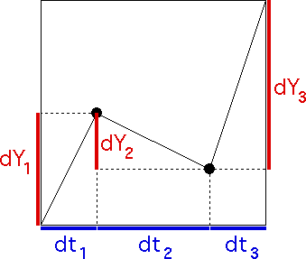

| The generator has turning points
(1/4, 1/2) and (3/4, 1/4), so the
price and
clock time increments |
| dY1 = 1/2 - 0 = 1/2, |
dt1 = 1/4 - 0 = 1/4 |
| dY2 = 1/4 - 1/2 = -1/4, |
dt2 = 3/4 - 1/4 = 1/2 |
| dY3 = 1 - 1/4 = 3/4, |
dt3 = 1 - 3/4 = 1/4. |
|
|  |
| It is easy to see this is not
a unifractal generator: compute Hi =
Log|dYi|/Log(dti). |
| We obtain |
| H1 = Log(1/2)/Log(1/4) = 0.5, |
| H2 = Log(1/4)/Log(1/2) = 2, and |
| H3 = Log(3/4)/Log(1/4) = 0.207519. |
|